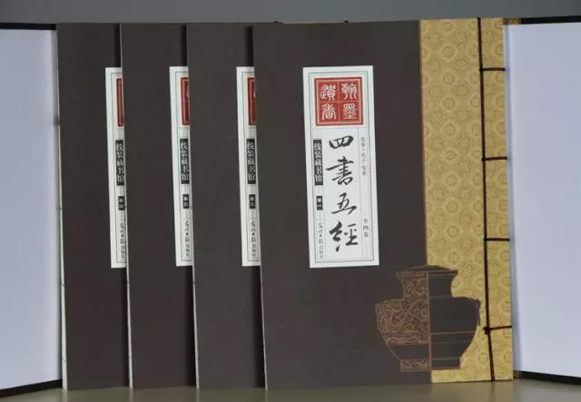

彼得德鲁克说：“一个企业只能在企业家的思维空间里成长,一个企业的成长被其经营者所能达到的思维空间所限制!”学习是打开思维空间即企业成长最快速的方式！

前言
随着时代的变迁，修养、学识、品质、勇气和智慧的集合，无疑成为一个现代管理者修身最重要的目标。儒家思想是国学的核心主干，它培育、陶冶了中国人两千多年。儒学常兴不衰，四顾寰宇内，儒商捭阖纵横，孔孟论道天下。学子溯本寻源，唯《四书五经》瞻首，历代科兴选仕，试卷命题无他。为官从政，尊人处世之道皆悟其中。
《四书》以温和平实的文字，揭示出了企业家安身立命的根本，帮助企业家做到格物致知，修身正心。儒家精神是企业文化建设的重要依据，它带给企业家的是内圣外王之道。
听当代鸿儒纵论《四书》政经奥义，融通儒家哲学智慧，参悟古今管理精髓。
紫荆国学经典学堂3月10-11日特邀北京大学哲学系教授杨立华讲授《儒家智慧与现代应用》，在解读《大学》《论语》以人为本、以德为先、以义为重、以和为贵、以中为用的圣人教诲中，学会安身立命，提升人格魅力，确定价值基础，进而准确把握儒学为政以德的管理精神以及修身齐家治国平天下的管理路径，从而奠定富有生命力和竞争力的当代文化型企业的思想根基。
主讲老师：杨立华
●北京大学哲学系教授，哲学博士
●全国教育科学“十五”规划项目重点课题负责人
●主要研究领域是中国哲学史、儒学、道家与道教，近年来主要着力于宋明哲学及魏晋哲学的研究。
●樊登老师曾在博客中评价杨教授对儒学和西方哲学的学养深不可测，让自己觉得好像打乒乓球遇到了国家队一样。
●有学员评价说听杨老师的课就如同一场心灵的对话：老师的坦诚，丰富的人生阅历，对文学的感悟，哲学的思辨，配以对当今大众文化的解读，如同才子一样的演讲家。
课程大纲
经典解读四书
一、国学智慧与现代生活
（1）现代性的哲学基础
●断裂：现代性的自我意识
●中国古代哲学中古今之辩
●现代性的本质：生活态度的根本转变
●现代性的基本面相
●虚无主义
（2）儒家精神
●如何克服个人生活中的虚无主义
●儒家的幸福观
●重建感受生活的能力：敬畏与仁
二、经典精读：《大学》
（1）《大学》三纲领
●大学之道在明德
（2）与《大学》有关的知识
（3）格物、致知、诚意、正心
●格物致知三方面
●诚意的时代意义
●正心篇
（4）修身之道
三、经典精读：《论语》
（1）儒家思想介绍
●《论语》的核心
（2）孔子的贡献
●塑造中国的固相，价值之彰显
●人格之示范
●提升士大夫精神
●文化的传承
（3）孔子精神气质要点
●刚毅、正大、笃实、平易
（4）孔子的思想
●孔子的政治思想
●孔子的政治原则
上课时间
上课时间：2018年3月10-11日（周六—周日）
上午9:00-12:00 ；下午13:30—16:30
上课地点：深圳清华大学研究院
参加对象
1、希望提升人文素养、哲学素养、思想境界的领导者。
2、清华学员（优先报名）、企业家、CEO等。
报名咨询：
请在右侧留言或致电400-115-1005（12小时*7天）报名
获取本周课程表请电话咨询400-115-1005（12小时*7天）
温馨提示：
1、为了便于您更全面的了解课程，有意向报读的话可以申请免费试听半天正式课程（推荐上午）。若申请下午继续试听，需填写报名表及缴纳报名费5000元。
2、请遵守课堂纪律，因您是试听学员，所以不主动邀请您参与发言和讨论，谢谢配合。若有相关疑问，可在课程所预留的互动时间或课间与老师或同学交流。请自带记录所用笔与笔记本；请上课时将手机调至震动或静音，并在教室外通话。
国学经典学堂18期热招中

国学经典学堂汇聚国学一流专家学者，综览古今经典思想智慧，解读历史兴替得失。
旨在帮助创业者、企业家研习并践行国学。在复杂的企业经营环境中，学会规避风险、把握商机、赢得优势、参透事物本质。探索修身、治企有效路径。
你走得有多远，取决与谁同行。
加入国学班，与卓越者同行！
联系方式：400-115-1005 邮箱:fub@tsinghua-sz.org
地址：深圳市南山区高新科技园南区高新南七道19号深圳清华大学研究院五楼


版权所有：深圳清华大学研究院 备案：粤ICP备11063336号-3 深圳网站建设：沙漠风